Chapter 4: External and Internal Organizational Environments and Corporate Culture¶
Introduction¶
Learning Outcomes
After reading this chapter, you should be able to understand these statements:
- Define the external environment of organizations.
- Identify contemporary external forces pressuring organizations.
- Identify different types of organizational structures and their strengths and weaknesses.
- Explain how organizations organize to meet external market threats and opportunities.
- Identify the fit between organizational cultures and the external environment.
- Identify environmental trends, demands, and opportunities facing organizations.
Exploring Managerial Careers: Jeff Bezos of Amazon
Amazon’s market value was estimated at $1 trillion USD dollars in 2018. The company was recognized as the most innovative company in Fast Company’s 2017 list, accounting for 44 percent of all U.S. e-commerce that year—approximately 4 percent of the U.S.’s total retail sales. Amazon market value is greater than the sum of the market capitalizations of Walmart, Target, Best Buy, Nordstrom, Kohl’s, JCPenney, Sears, and Macy’s. Jeff Bezos, founder and leader, has creatively accomplished what most large companies fail at: meshing size, scale, and external opportunities with agility. Sales figures reached $100 billion in 2015 while the stock price climbed over 300% in the past five years. The company plans on creating over 50,000 new jobs starting in 2018. Bezos has blended his strategy of virtually reaching unlimited numbers of online customers while maintaining land-based distribution centers using Prime’s $99-per-year—$119 in 2018—membership. Stephenie Landry, an Amazon vice president, stated that Prime has reached 49 cities in seven countries. Over 100 million people in 2018 subscribe to the Prime service. She noted that the business has only to answer two questions from customers: “Do you have what I want, and can you get it to me when I need it?” The answer seems to be yes, especially with Bezos’s strategy of having high-tech robots already working side by side with human employees—resembling a “factory of the future.”
Bezos’s digital commerce strategy has led the firm to become the leader of retail commerce. Amazon’s digital strategy uses Prime memberships that are supplied and supported by land-based distribution centers; Prime takes in reaching about 60% of the total dollar value of all merchandise sold on the site. That accounts for 60 million customers in the United States who use Prime and who spend $2,500 on Amazon annually. A study of 3,000 independent businesses, half of whom were retailers, listed competition from Amazon as their primary concern. Industry after industry is being disrupted, some replaced, by Bezos’s strategy. He has said, “Everybody wants fast delivery. Low prices. I’m serious about this. Our job is to provide a great customer experience, and that is something that is universally desired all over the world”.
Still, Amazon faces such challenges as high shipping cost (over $11 billion annually), pressures on employees (especially those working in warehouses that have been criticized for poor working conditions), shipping contractors who go on strike demanding higher wages and reduced workloads, and the possibilities of more governmental regulation (especially with regard to adding drones as a delivery method), as well as pressures to pay more taxes. Bezos has countered these arguments by adding more full-time jobs in different cities, promising to improve working conditions, supporting public spaces for the public, and most importantly, contributing to the U.S. economy.
Sources: https://www.bloomberg.com/news/articles/2018-04-26/amazon-eyes-second-biggest-market-cap-surging-past-microsoft. Noah Robischon, (2017). Why Amazon Is The World’s Most Innovative Company Of 2017, https://www.fastcompany.com/3067455/why-amazon-is-the-worlds-most-innovative-company-of-2017; L. Thomas, (2018). Amazon grabbed 4 percent of all US retail sales in 2017, new study says, https://www.cnbc.com/2018/01/03/amazon-grabbed-4-percent-of-all-us-retail-sales-in-2017-new-study.html
Organizations and industries are again at a crossroads when confronting new and challenging external environmental demands. Exceptional companies such as Amazon, in the opening case, Apple, Netflix, and Google/Alphabet Inc. exemplify evolving business models that combine strategic innovation, technological prowess, and organizational cultural agility that not only meet external environmental demands, but also shape them.
Many businesses with traditional business models, however, have failed or are not succeeding strategically, operationally, and organizationally by not realizing and/or adapting to changing external environments. Such firms that were once successful but did not anticipate and then adapt to such changes include Blockbuster, Toys R Us, Borders, Sun Microsystems, Motorola, Digital Equipment Corporation, Polaroid, and Kodak, to name only a few. A sample of contemporary external environmental trends and forces that currently challenge organizations’ survival and effectiveness includes:
- Digital technologies and artificial intelligence (AI): Extensions of AI help automate a firm’s value chain, thus speeding up and increasing efficient operations and service to customers—as Amazon exemplifies. A current survey showed that 59% of organizations are collecting information to develop AI strategies, while others are moving forward in piloting and/or adopting AI solutions to compete faster and at less cost. However, there are also risks that accompany firms that incorporate new digital and online technologies without adequate security measures. For example, some newer online technologies can expose operational systems to cyberattacks and large-scale manipulation. Hacking is now both an illegal and ongoing “profession” for those who are able to paralyze organizations from accessing their data unless they pay a ransom. While hacking is not new, it is more widespread and lethal, to the point of even threatening national security. Evidence from the U.S. presidential election between Donald Trump and Hillary Clinton indicates that international hackers affected online U.S. election processes. In 2020, a major cyberattack penetrated multiple portions of the U.S. federal government, including the Departments of Homeland Security, Justice, Treasury, Energy, and Defense. Still, the future of most businesses is using some type of digital and AI technologies.
- The advent of blockchain technologies that are interrupting new industry practices. Blockchain is not a single technology; it is “an architecture that allows disparate users to make transactions and then creates an unchangeable record of those transactions.” It is “a public electronic ledger—similar to a relational database—that can be openly shared among disparate users and that creates an unchangeable record of their transactions, each one time-stamped and linked to the previous one.” These technological inventions will continue to affect almost every business process from procurement to legal management. The banking industry is already using it. It increases speed, security, and accuracy of transactions.
- Sharing-economy cultural and economic value-added business models that use information technologies to gain competitive advantage. Companies such as Airbnb and Uber have ushered in new business models that have already disrupted real estate, hotel, taxi, and other industries. Taking out the middle layer of management in transactions to increase efficiencies and customer satisfaction while cutting costs through the use of information and social media technologies will continue. This trend has already had both positive and disruptive effects on companies. Many customers are likely benefitted; businesses with outdated and ineffective business models have either failed or struggle to adapt.
- Shifts in learning and learning credentials. Identifying, recruiting, and retaining talent is crucial to organizations. An evolving crisis for the current generation—future talent—is the continued rise in higher educational institutions’ tuitions, student debt, and the changing nature of jobs. With the advent of online resources, prospective students’ inability to pay creates both a crisis and opportunity for traditional higher educational institutions. While bachelor’s degrees remain a requirement for many companies hiring needed higher-level talent, online resources such as Khan Academy, Udacity, and Coursera are gaining recognition and legitimacy toward providing financially challenged students opportunities for entry-level jobs. While many higher-skilled students and professionals may not presently be included in this trend, companies seeking to pay lower wages while offering flexible working conditions are attracting students. Again, how higher educational private, not-for-profit, and even for-profit educational institutions adapt, innovate, and manage their external environments is yet to be seen.
- Ethics, corporate social responsibility (CSR), and sustainability. Corruption, lying, and fraud have been and continue to be part of the landscape of governments and public- and private-sector corporations. However, public awareness through social and online media has awakened consumers and corporations to the impending dangers and drawbacks of illegal and unethical activities of certain large corporations. And external environmental problems, created in part by humans, such as pollution and climate change pressure companies to be responsible for their share of the costs associated with these problems.
This small sample of powerful external forces illustrates the continuing pressure companies encounter to innovate in their industries. Basic theories, concepts, and principles are presented in this chapter to help explain elements of external environments and how organizations and corporations can organize and are organizing to survive and thrive in the 21st century.
4.1 The Organization's External Environment¶
- Define the external environment of organizations.
To succeed and thrive, organizations must adapt, exploit, and fit with the forces in their external environments. Organizations are groups of people deliberately formed together to serve a purpose through structured and coordinated goals and plans. As such, organizations operate in different external environments and are organized and structured internally to meet both external and internal demands and opportunities. Different types of organizations include not-for-profit, for-profit, public, private, government, voluntary, family owned and operated, and publicly traded on stock exchanges. Organizations are commonly referred to as companies, firms, corporations, institutions, agencies, associations, groups, consortiums, and conglomerates.
While the type, size, scope, location, purpose, and mission of an organization all help determine the external environment in which it operates, it still must meet the requirements and contingencies of that environment to survive and prosper. This chapter is primarily concerned with how organizations fit with their external environments and how organizations are structured to meet challenges and opportunities of these environments. Major takeaways for readers of this chapter include the following: 1) Be able to identify elements in any organization’s external—and internal—environment that may interest or affect you as an employee, shareholder, family member, or observer. 2) Gain insights into how to develop strategies and tactics that would help you (and your organization) navigate ways to cope with or try to dominate or appeal to elements (e.g., market segments, stakeholders, political/social/economic/technological issues) in the environment.
The big picture of an organization’s external environment, also referred to as the general environment, is an inclusive concept that involves all outside factors and influences that impact the operation of a business that an organization must respond or react to in order to maintain its flow of operations. Figure 4.2 illustrates types of general macro environments and forces that are interrelated and affect organizations: sociocultural, technological, economic, government and political, natural disasters, and human-induced problems that affect industries and organizations. For example, economic environmental forces generally include such elements in the economy as exchange rates and wages, employment statistics, and related factors such as inflation, recessions, and other shocks—negative and positive. Hiring and unemployment, employee benefits, factors affecting organizational operating costs, revenues, and profits are affected by global, national, regional, and local economies. Other factors discussed here that interact with economic forces include politics and governmental policies, international wars, natural disasters, technological inventions, and sociocultural forces. It is important to keep these dimensions in mind when studying organizations since many if not most or all changes that affect organizations originate from one or more of these sources—many of which are interrelated.
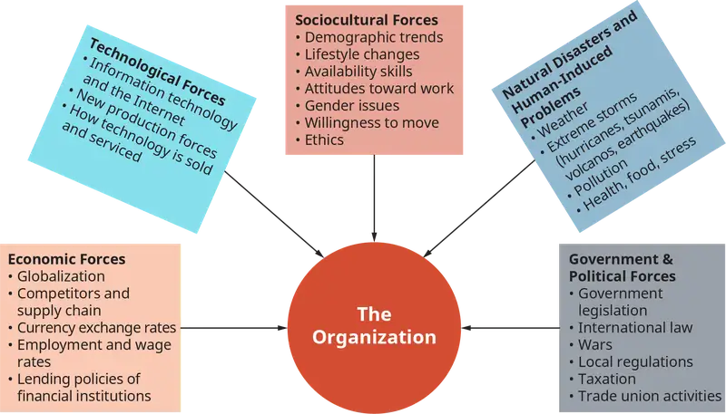
Globalization is a combination of external forces shaping environments of organizations. Defined as the development of an integrated global economy and characterized by free trade, capital flows, communications, and cheaper foreign labor markets, the processes of globalization underlie the forces in the general international economic environment. This dimension continues to present opportunities and pressures to companies operating locally as well as globally. Globalization continues to affect industries and companies in ways that benefit some and not others. Amazon, for example, is thriving. The firm sells low-end products through its brand AmazonBasics. The company has individual retail websites for the United States, the United Kingdom and Ireland, France, Canada, Germany, Italy, Spain, the Netherlands, Australia, Brazil, Japan, China, India, and Mexico. Uber and Airbnb represent some of the larger sharing-economy companies that operate internationally and have to date prospered in the so-called new but fragmenting global economy.
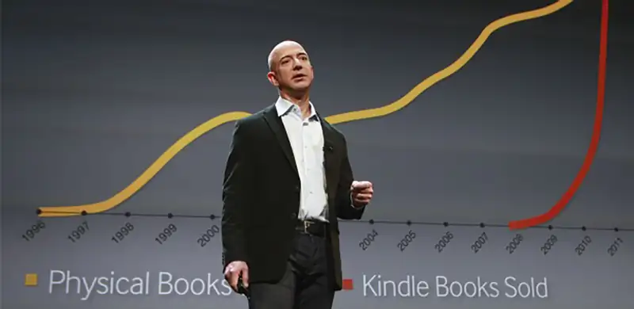
In general, countries that have gained from globalization include Japan, South Korea, Taiwan, Malaysia, Singapore, Hong Kong, Thailand, and China. China’s markets and growing economic prowess have particularly been noticed. China’s GDP (gross domestic product) is estimated at $13.2 trillion in 2018, outpacing the $12.8 trillion combined total of the 19 countries that use the euro. Corporations worldwide, large and small, online and land-based, strive to gain access to sell in China’s vast markets. Moreover, China at the beginning of 2018 owns $1.168 trillion of the United States’ debt. Japan, in second place, owes $1.07 trillion of this debt. Any instability politically and economically with China could result in increasing inflation and interest rates in the U.S. economy that could, in turn, negatively affect U.S. businesses.
Economic forces¶
Economically, “The strategic challenge of the next decade is navigating a world that is simultaneously integrating and fragmenting. Stock markets have set new records and economic volatility has fallen to historic lows, while political shocks on a scale unseen for generations have taken place. Seemingly contradictory realities do co-exist.” Overall, while economic data indicates that globalization has had a positive effect on the world economy, a dark side also shows that two-thirds of all households in 25 advanced-economy countries had incomes stagnate and/or decline between 2005 and 2014. Moreover, the U.K. and U.S. witnessed falling wages. Wealth distribution in these countries continues to decline. Income inequality globally is also rising. Other trends that also affect the global, regional, and local economies are discussed in this chapter as well as below.
Technological forces¶
Technological forces are another ubiquitous environmental influence on organizations. Speed, price, service, and quality of products and services are dimensions of organizations’ competitive advantage in this era. Information technologies and social media powered by the Internet and used by sharing-economy companies such as Airbnb and Uber have democratized and increased, if not leveled, competition across several industries, such as taxis, real estate rentals, and hospitality services. Companies across industry sectors cannot survive without using the Internet, social media, and sophisticated software in R&D (research and development), operations, marketing, finance, and sales. To manage and use big data in all these functional areas, organizations rely on technology.
Government and political forces¶
Government and political forces also affect industries and organizations. Recent events that have jarred the global economy—and are too early to predict the long-term outcomes of—are the United Kingdom’s exit from the European Union, wars in the Middle East, policies that question and disrupt free trade, health-care reform, and immigration—all of which increase uncertainty for businesses while creating opportunities for some industries and instability in others.
Sociocultural forces¶
Sociocultural environmental forces include different generations’ values, beliefs, attitudes, customs and traditions, habits, and lifestyles. More specifically, other aspects of societal cultures are education, language, religion, law, politics, and social organizations. The millennial (ages 20 to 35) workforce, for example, generally seeks work that engages and interests them. Members of this generation are also health conscious and eager to learn. Since this and the newer generation (Generation Z) are adept and accustomed to using technology—social media in particular—organizations must be ready and equipped to provide wellness, interesting, and a variety of learning and work experiences to attract and retain new talent. Millennials are also estimated to be the United States’ largest living adult generation in 2019. This generation numbered about 71 million compared with 74 million baby boomers (ages 52 to 70) in 2016. By 2019, an estimated 73 million millennials and 72 million boomers are projected. Because of immigration, millennials are estimated to increase until 2036.
Other general sociocultural trends occurring in the United States and internationally that affect organizations include the following: (1) Sexual harassment at work in the era of #MeToo has pressured organizations to be more transparent about relationships between owners, bosses, and employees. Related to this trend, some surveys show new difficulties for men in workplace interactions and little effect on women’s career opportunities taking place in the short term. (2) While fewer immigrants have been entering the United States in recent years, diversity in the U.S. workplace continues. For example, 20 million Asian Americans trace their roots to over 20 countries in East and Southeast Asia and the Indian subcontinent—“each with unique histories, cultures, languages and other characteristics. The 19 largest origin groups together account for 94% of the total Asian population in the U.S.” (3) Young adults in the United States are living at home longer. “In 2016, 15% of 25- to 35-year-old Millennials were living in their parents’ home. This is 5 percentage points higher than the share of Generation Xers who lived in their parents’ home in 2000 when they were the same age (10%), and nearly double the share of the Silent Generation who lived at home in 1964 (8%).” (4) While women have made gains in the workplace, they still comprise a small share of top leadership jobs—across politics and government, academia, the nonprofit sector, and business. Women comprised only about 10% of CEOs (chief executive officers), CFOs (chief financial officers), and the next three highest-paid executives in U.S. companies in 2016–17. A 2018 study by McKinsey & Company “reaffirms the global relevance of the link between diversity—defined as a greater proportion of women and a more mixed ethnic and cultural composition in the leadership of large companies—and company financial outperformance.” These and other related sociocultural trends impact organizational cultures and other dimensions involving human talent and diverse workforces.
Natural disasters and human-related problems¶
Natural disaster and human induced environmental problems are events such as high-impact hurricanes, extreme temperatures and the rise in CO2 emissions as well as ‘man-made’ environmental disasters such as water and food crises; biodiversity loss and ecosystem collapse; large-scale involuntary migration are a force that affects organizations. The 2018 Global Risks Report identified risks in the environmental category that also affect industries and companies—as well as continents and countries. These risks were ranked higher than average for both likelihood and impact over a 10-year horizon. The report showed that 2017 was characterized by high-impact hurricanes, extreme temperatures, and the first rise in carbon dioxide emissions in four years; “man-made” environmental disasters; water and food crises; biodiversity loss and ecosystem collapse; and large-scale involuntary migration to name a few. Authors of this study noted that “Biodiversity is being lost at mass-extinction rates, agricultural systems are under strain and pollution of the air and sea has become an increasingly pressing threat to human health.” Most vulnerable to rising seas are low-lying islands in the Indian and Pacific Oceans. The Republic of the Marshall Islands has more over 1,100 low-lying islands on 29 atolls that include island nations with hundreds of thousands of people. Predictions indicate that rising sea levels could reach 3 feet worldwide by 2300 or sooner. One report stated that in your child’s lifetime, Miami, Florida, could be underwater. Large sections of Louisiana’s marshes separating the ocean from the coastline are submerging. Oil producers and other related corporations are being sued by that state, claiming that fossil fuel emissions have contributed to natural disasters such as climate change. Many new companies in the United States are already constructing buildings to withstand increasing flooding and predicted rising water levels.
Concept Check
Define the components of the internal and the external business environments.
What factors within the economic environment affect businesses?
Why do demographic shifts and technological developments create both challenges and new opportunities for business?
4.2 External Environments and Industries¶
- Identify contemporary external forces pressuring organizations.
Industry and organizational leaders monitor environments to identify, predict, and manage trends, issues, and opportunities that their organizations and industries face. Some corporations, such as Amazon, anticipate and even create trends in their environments. Most, however, must adapt. External environments, as identified in the previous section, can be understood by identifying the uncertainty of the environmental forces. Figure 4.4 illustrates a classic and relevant depiction of how scholars portray environment-industry-organization “fit,” that is, how well industries and organizations align with and perform in different types of environments.
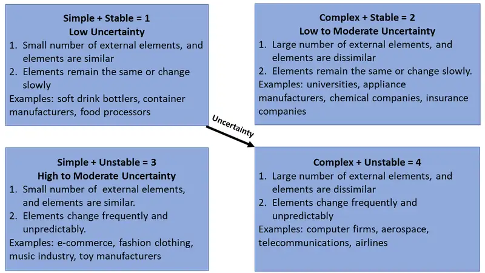
The two dimensions of this figure represent “environmental complexity” (i.e., the number of elements in the environment, such a competitors, suppliers, and customers), which is characterized as either simple or complex, and “environmental change,” described as stable or unstable. How available monetary and financial resources are to support an organization’s growth is also an important element in this framework. Certain industries—soft drink bottlers, beer distributors, food processors, and container manufacturers—would, hypothetically, fit and align more effectively in a stable (i.e., relative unchanging), simple, and low-uncertainty (i.e., has mostly similar elements) external environment—cell 1 in Figure 4.4. This is referred to when organizations are in a simple-stable environment. Of course unpredicted conditions, such as global and international turmoil, economic downturns, and so on, could affect these industries, but generally, these alignments have served as an ideal type and starting point for understanding the “fit” between environment and industries. In a stable but complex, low- to moderate-uncertainty environment, cell 2 in Figure 4.4, universities, appliance manufacturers, chemical companies, and insurances companies would generally prosper. This is referred to when organizations are in a complex-stable environment. When the external environment has simple but high to moderate uncertainty, cell 3 of Figure 4.4, e-commerce, music, and fashion clothing industries would operate effectively. This is referred to when organizations are in a simple-unstable environment. Whereas in cell 4 of Figure 4.4, an environment characterized by a high degree of uncertainty with complex and unstable elements, industries and firms such as computer, aerospace, airlines, and telecommunications firms would operate more effectively. This is referred to when organizations are in a complex-unstable environment.
Figure 4.4 is a starting point for diagnosing the “fit” between types of external environments and industries. As conditions change, industries and organizations must adapt or face consequences. For example, educational institutions that traditionally have been seen to operate best in low- to moderate-uncertainty environments, cell 2 of Figure 4.4, have during this past decade experienced more high to moderate uncertainty (cell 3)—and even high uncertainty (cell 4). For example, for-profit educational institutions such the University of Phoenix and others—as compared to not-for-profit universities and colleges, such as public state institutions, community colleges, and private nonprofit ones—have undergone more unstable and complex forces in the external environment over the past decade. Under the Obama administration, for-profit universities faced greater scrutiny regarding questionable advertising, graduation rates, and accreditation issues; lawsuits and claims against several of these institutions went forward, and a few of the colleges had to close. The Trump administration showed signs of alleviating aggressive governmental control and monitoring in this sector. Still, higher educational institutions in general currently face increasingly complex and unstable environments given higher tuition rates, increased competition from less-expensive and online programs, fewer student enrollments, and an overabundance of such institutions. Several private, not-for-profit higher educational institutions have merged and also ceased to exist. Adapting to increasingly rapid external change has become a rallying call for most industries and organizations as the 21st century evolves.
Organizational Complexity¶
It is important to point out here that external (and internal) organizational complexity is not often as simple as it may seem. It has been defined as “…the amount of complexity derived from the environment where the organisation operates, such as the country, the markets, suppliers, customers and stakeholders; while internal complexity is the amount of complexity that is internal to the organisation itself, i.e. products, technologies, human resources, processes and organisational structure. Therefore, different aspects compose internal and external complexities.”
The dilemma that organizational leaders and managers sometimes face is how to deal with external, and internal, complexity? Do you grow and nurture it or reduce it? Some strategies call for reducing and managing it at the local level while nurturing it at the global level—depending on the organization’s size, business model, and the nature of the environments. Without going into complicated detail, it is fair to say at the beginning of the chapter that you may want to read through the chapter first, then return here afterward.
In the meantime, here are some simple rules from organizational practitioners De Toni and De Zan to keep in mind for managing high levels of complexity from the external environment, internally, after you have diagnosed the nature of the external complexity—as we discuss throughout in this chapter: first, assemble “…a set of self-managing teams or autonomous business units,[known as modularized units] with an entrepreneurial responsibility to the larger organization.” These focused self-organizing teams use creative methods to deal with the diversity to the advantage of the organization. A second method when facing high external environmental complexity when you want to gain value from it is to find and develop “…simple rules to drive out creativity and innovation … to keep the infrastructure and processes simple, while permitting complex outputs and behaviours.” An example offered is found in the rules of the Legos company: “(1) does the proposed product have the Lego look? (2) Will children learn while having fun? (3) Will parents approve? (4) Does the product maintain high quality standards? (5) Does it stimulate creativity?”
A third strategy for dealing with external complexity involves companies’ building on their own capabilities. If companies attempt to manage too much complexity it would lead to chaos. Some strategies to combat external complexity and improve a company’s capabilities include: (1) creating open networks internal and outside the organization to promote cooperation and integration, and (2) to develop and advance their brand and reputation. Some of those strategies include creating open networks internal and outside the organization to promote cooperation and integration and to develop brand and reputation. Also, sharing “…values, vision, strategy, organizational processes and knowledge, through the development of trust and incorporation and promotion of leaders at all levels” can help internal teams exploit external complexity to the organization’s advantage. Keep these ideas in mind as you read through the chapter and think about how leaders, managers, employees, and you can learn to read external environmental clues that organizations can use to creatively and proactively use organizational resources to be more competitive, effective, and successful.
Concept Check
What factors within the economic environment affect businesses?
Why do change and shifts and technological developments create both challenges and new opportunities for business?
4.3 Organizational Designs and Structures¶
- Identify different types of organizational structures and their strengths and weaknesses.
A 2017 Deloitte source asked, before answering, “Why has organizational design zoomed to the top of the list as the most important trend in the Global Human Capital Trends survey for two years in a row?” The source continued, “The answer is simple: The way high-performing organizations operate today is radically different from how they operated 10 years ago. Yet many other organizations continue to operate according to industrial-age models that are 100 years old or more.”
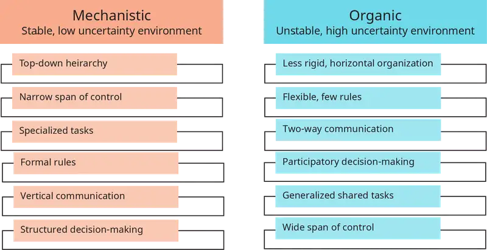
Early organizational theorists broadly categorized organizational structures and systems as either mechanistic or organic. This broad, generalized characterization of organizations remains relevant. Mechanistic organizational structures (Figure 4.5) are best suited for environments that range from stable and simple to low-moderate uncertainty (Figure 4.4) and are characterized by top-down hierarchies of control that are rule-based. The chain of command is highly centralized and uses formal authority; tasks are clearly defined and differentiated to be executed by specific specialized experts. Bosses and supervisors have fewer people working directly under them (i.e., a narrow span of control), and the organization is governed by rigid departmentalization (i.e., an organization is divided into different departments that perform specialized tasks according to the departments’ expertise). This form of organization represents a traditional type of structure that evolved in environments that were, as noted above, stable with low complexity. Historically, the U.S. Postal Service and other manufacturing types of industries (Figure 4.4) were mechanistic. Again, this type of organizational design may still be relevant, as Figure 4.4 suggests, in simple, stable, low-uncertainty environments.
Organic organizational structures and systems, however, have opposite characteristics from mechanistic ones. As Figure 4.4 shows, these organizational forms work best in unstable, complex, changing environments. Their structures are flatter, with participatory communication and decision-making flowing in different directions. There is more fluidity and less-rigid ways of performing tasks; there may also be fewer rules. Tasks are more generalized and shared; there is a wider span of control (i.e., more people reporting to managers). Figure 4.5 offers examples of organically structured industries, such as high tech, computer, aerospace, and telecommunications industries, that must deal with change and uncertainty. Contemporary corporations and firms engaged in fast-paced, highly competitive, rapidly changing, and turbulent environments are becoming more organic in different ways, as we will discuss in this chapter. However, not every organization or every part of most organizations may require an organic type of structure. Understanding different organizational designs and structures is important to discern when, where, and under what circumstances a type of mechanistic system or part of an organization would be needed. The following section discusses five types of structures with variations.
Types of Organizational Structures¶
Within the context of mechanistic versus organic structures, specific types of organizational structures in the United States historically evolved over at least three eras, as we discuss here before explaining types of organizational designs. During the first era, the mid-1800s to the late 1970s, organizations were mechanistic self-contained, top-down pyramids. Emphasis was placed on internal organizational processes of taking in raw materials, transforming those into products, and turning them out to customers.
Early organizational structures were focused on internal hierarchical control and separate functional specializations in order to adapt to external environments. Structures during this era grouped people into functions or departments, specified reporting relationships among those people and departments, and developed systems to coordinate and integrate work horizontally and vertically. As will be explained, the functional structure evolved first, followed by the divisional structure and then the matrix structured.
The second era started in the 1980s and extended through the mid-1990s. More-complex environments, markets, and technologies strained mechanistic organizational structures. Competition from Japan in the auto industry and complex transactions in the banking, insurance, and other industries that emphasized customer value, demand and faster interactions, quality, and results issued the need for more organic organizational designs and structures.
Communication and coordination between and among internal organizational units and external customers, suppliers, and other stakeholders required higher levels of integration and speed of informational processing. Personal computers and networks had also entered the scene. In effect, the so-called “horizontal organization” was born, which emphasized “reengineering along workflow processes that link organizational capabilities to customers and suppliers.” Ford, Xerox Corp., Lexmark, and Eastman Kodak Company are examples of early adopters of the horizontal organizational design, which, unlike the top-down pyramid structures in the first era, brought flattened hierarchical, hybrid structures and cross-functional teams.
The third era started in the mid-1990s and extends to the present. Several factors contributed to the rise of this era: the Internet; global competition—particularly from China and India with low-cost labor; automation of supply chains; and outsourcing of expertise to speed up production and delivery of products and services. The so-called silos and walls of organizations opened up; everything could not be or did not have to be produced within the confines of an organization, especially if corporations were cutting costs and outsourcing different functions of products to save costs. During this period, further extensions of the horizontal and organic types of structures evolved: the divisional, matrix, global geographic, modular, team-based, and virtual structures were created.
In the following discussion, we identify major types of structures mentioned above and discuss the advantages and disadvantages of each, referenced in Figure 4.6. Note that in many larger national and international corporations, there is a mix and match among different structures used. There are also advantages and disadvantages of each structure. Again, organizational structures are designed to fit with external environments. Depending on the type of environments from our earlier discussion in which a company operates, the structure should facilitate that organization’s capability to achieve its vision, mission, and goals.
Figure 4.6 offers a profile of different structures that evolved in our discussion above.
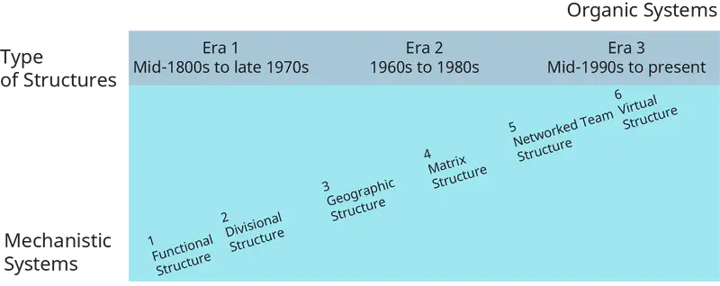
Note the continuum in Figure 4.6, showing the earliest form of organizational structure, functional, evolving with more complex environments to divisional, matrix, team-based, and then virtual. This evolution, as discussed above, is presented as a continuum from mechanistic to organic structures—moving from more simple, stable environments to complex, changing ones, as illustrated in Figure 4.6. The six types of organizational structures discussed here include functional, divisional, geographic, matrix, networked/team, and virtual.
The functional structure, shown in Figure 4.7, is among the earliest and most used organizational designs. This structure is organized by departments and expertise areas, such as R&D (research & development), production, accounting, and human resources. Functional organizations are referred to as pyramid structures since they are governed as a hierarchical, top-down control system.
Small companies, start-ups, and organizations working in simple, stable environments use this structure, as do many large government organizations and divisions of large companies for certain tasks.
The functional structure excels in providing for a high degree of specialization and a simple and straightforward reporting system within departments, offers economies of scale, and is not difficult to scale if and when the organization grows. Disadvantages of this structure include isolation of departments from each other since they tend to form “silos,” which are characterized by closed mindsets that are not open to communicating across departments, lack of quick decision-making and coordination of tasks across departments, and competition for power and resources.
Divisional structures, see Figure 4.8, are, in effect, many functional departments grouped under a division head. Each functional group in a division has its own marketing, sales, accounting, manufacturing, and production team. This structure resembles a product structure that also has profit centers. These smaller functional areas or departments can also be grouped by different markets, geographies, products, services, or other whatever is required by the company’s business. The market-based structure is ideal for an organization that has products or services that are unique to specific market segments and is particularly effective if that organization has advanced knowledge of those segments.
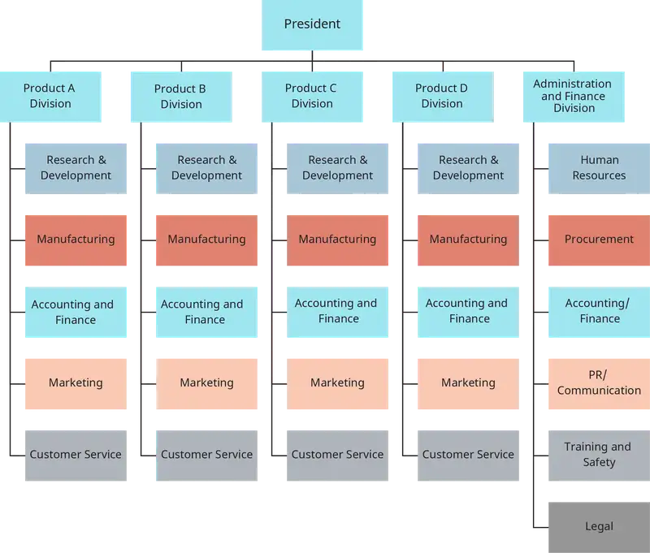
The advantages of a divisional structure include the following: each specialty area can be more focused on the business segment and budget that it manages; everyone can more easily know their responsibilities and accountability expectations; customer contact and service can be quicker; and coordination within a divisional grouping is easier, since all the functions are accessible. The divisional structure is also helpful for large companies since decentralized decision-making means that headquarters does not have to micromanage all the divisions. The disadvantages of this structure from a headquarters perspective are that divisions can easily become isolated and insular from one another and that different systems, such as accounting, finance, sales, and so on, may suffer from poor and infrequent communication and coordination of enterprise mission, direction, and values. Moreover, incompatibility of systems (technology, accounting, advertising, budgets) can occur, which creates a strain on company strategic goals and objectives.
A geographic structure, Figure 4.9, is another option aimed at moving from a mechanistic to more organic design to serve customers faster and with relevant products and services; as such, this structure is organized by locations of customers that a company serves. This structure evolved as companies became more national, international, and global. Geographic structures resemble and are extensions of the divisional structure.
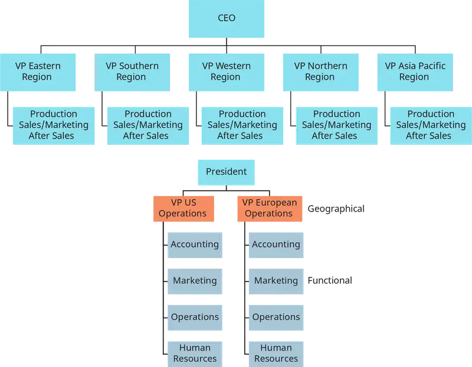
Organizing geographically enables each geographic organizational unit (like a division) the ability to understand, research, and design products and/or services with the knowledge of customer needs, tastes, and cultural differences. The advantages and disadvantages of the geographic structure are similar to those of the divisional structure. Headquarters must ensure effective coordination and control over each somewhat autonomous geographically self-contained structure.
The main downside of a geographical organizational structure is that it can be easy for decision-making to become decentralized, as geographic divisions (which can be hundreds if not thousands of miles away from corporate headquarters) often have a great deal of autonomy.
Matrix structures, illustrated in Figure 4.6 and depicted in Figure 4.11, move closer to organic systems in an attempt to respond to environmental uncertainty, complexity, and instability. The matrix structure actually originated at a time in the 1960s when U.S. aerospace firms contracted with the government. Aerospace firms were required to “develop charts showing the structure of the project management team that would be executing the contract and how this team was related to the overall management structure of the organization.” As such, employees would be required to have dual reporting relationships—with the government and the aerospace company. Since that time, this structure has been imitated and used by other industries and companies since it provides flexibility and helps integrate decision-making in functionally organized companies.
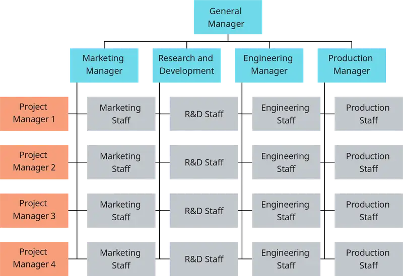
Matrix designs use teams to combine vertical with horizontal structures. The traditional functional or vertical structure and chain of command maintains control over employees who work on teams that cut across functional areas, creating horizontal coordination that focuses projects that have deadlines and goals to meet within and often times in addition to those of departments. In effect, matrix structures initiated horizontal team-based structures that provided faster information sharing, coordination, and integration between the formal organization and profit-oriented projects and programs.
As Figure 4.11 illustrates, this structure has lines of formal authority along two dimensions: employees report to a functional, departmental boss and simultaneously to a product or project team boss. One of the weaknesses of matrix structures is the confusion and conflicts employees experience in reporting to two bosses. To work effectively, employees (including their bosses and project leaders) who work in dual-authority matrix structures require good interpersonal communication, conflict management, and political skills to manage up and down the organization.
Different types of matrix structures, some resembling virtual team designs, are used in more complex environments. For example, there are cross-functional matrix teams in which team members from other organizational departments report to an “activity leader” who is not their formal supervisor or boss. There are also functional matrix teams where employees from the same department coordinate across another internal matrix team consisting of, for example, HR or other functional area specialists, who come together to develop a limited but focused common short-term goal. There are also global matrix teams consisting of employees from different regions, countries, time zones, and cultures who are assembled to achieve a short-term project goal of a particular customer. Matrix team members have been and are a growing part of horizontal organizations that cut across geographies, time zones, skills, and traditional authority structures to solve customer and even enterprise organizational needs and demands.
As part of the next discussed organizational type of structure, networked teams, organizational members in matrix structures must “learn how to collaborate with colleagues across distance, cultures and other barriers. Matrix team members often suffer from the problem of divided loyalties where they have both team and functional goals that compete for their time and attention, they have multiple bosses and often work on multiple teams at the same time. For some matrix team members this may be the first time they have been given accountability for results that are broader than delivery of their functional goals. Some individuals relish the breath and development that the matrix team offers and others feel exposed and out of control.” To succeed in these types of horizontal organizational structures, organizational members “should focus less on the structure and more on behaviors.”
Networked team structures are another form of the horizontal organization. Moving beyond the matrix structure, networked teams are more informal and flexible. “[N]etworks have two salient characteristics: clustering and path length. Clustering refers to the degree to which a network is made up of tightly knit groups while path lengths is a measure of distance—the average number of links separating any two nodes in the network.” A more technical explanation can be found in this footnote source. For our purposes here, a networked organizational structure is one that naturally forms after being initially assigned. Based on the vision, mission, and needs of a problem or opportunity, team members will find others who can help—if the larger organization and leaders do not prevent or obstruct that process.
There is not one classical depiction of this structure, since different companies initially design teams to solve problems, find opportunities, and discover resources to do so. Stated another way, “The networked organization is one that is connected together by informal networks and the demands of the task, rather than a formal organizational structure. The network organization prioritizes its ‘soft structure’ of relationships, networks, teams, groups and communities rather than reporting lines.” Figure 4.12 is a suggested illustration of this structure.
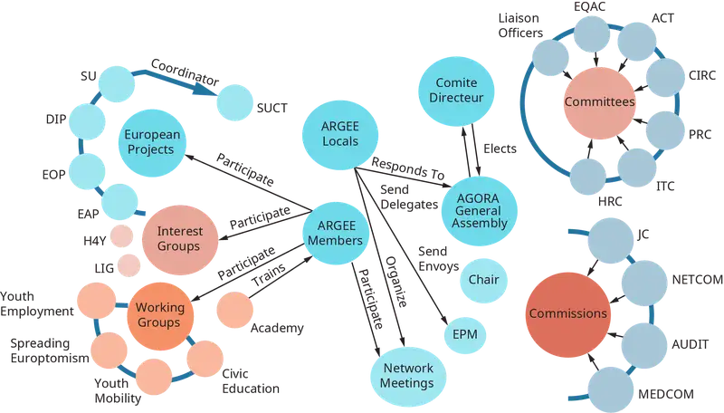
A Deloitte source based on the 2017 Global Human Capital Trend study stated that as organizations continue to transition from vertical structures to more organic ones, networked global designs are being adapted to larger companies that require more reach and scope and quicker response time with customers: “Research shows that we spend two orders of magnitude more time with people near our desk than with those more than 50 meters away. Whatever a hierarchical organization chart says, real, day-to-day work gets done in networks. This is why the organization of the future is a ‘network of teams.’”
Advantages of networked organizations are similar to those stated earlier with regard to organic, horizontal, and matrix structures. Weaknesses of the networked structure include the following: (1) Establishing clear lines of communication to produce project assignments and due dates to employees is needed. (2) Dependence on technology—Internet connections and phone lines in particular—is necessary. Delays in communication result from computer crashes, network traffic errors and problems; electronic information sharing across country borders can also be difficult. (3) Not having a central physical location where all employees work, or can assemble occasionally to have face-to-face meetings and check results, can result in errors, strained relationships, and lack of on-time project deliverables.
Virtual structures and organizations emerged in the 1990s as a response to requiring more flexibility, solution-based tasks on demand, fewer geographical constraints, and accessibility to dispersed expertise. Virtual structures are depicted in Figure 4.13. Related to so-called modular and digital organizations, virtual structures are dependent on information communication technologies (ICTs).
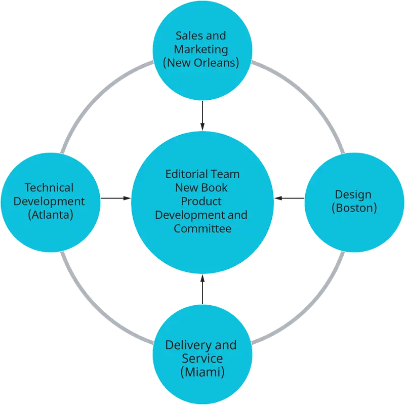
These organizations move beyond network team structures in that the headquarters or home base may be the only or part of part of a stable organizational base. Otherwise, this is a “boundaryless organization.” Examples of organizations that use virtual teams are Uber, Airbnb, Amazon, Reebok, Nike, Puma, and Dell. Increasingly, organizations are using different variations of virtual structures with call centers and other outsourced tasks, positions, and even projects.
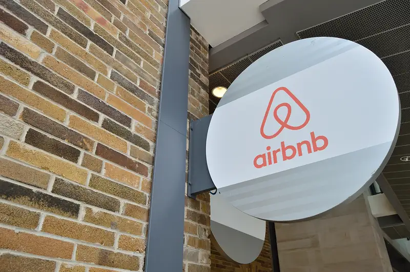
Advantages of virtual teams and organizations include cost savings, decreased response time to customers, greater access to a diverse labor force not encumbered by 8-hour workdays, and less harmful effects on the environment. “The telecommuting policies of Dell, Aetna, and Xerox cumulatively saved 95,294 metric tons of greenhouse gas emissions last year, which is the equivalent of taking 20,000 passenger vehicles off of the road.” Disadvantages are social isolation of employees who work virtually, potential for lack of trust among employees and between the company and employees when communication is limited, and reduced collaboration among separated employees and the organization’s officers due to lack of social interaction.
In the following section, we turn to internal organizational dimensions that complement structure and are affected by and affect external environments.
Concept Check
Why does the matrix structure have a dual chain of command?
How does a matrix structure increase power struggles or reduce accountability?
What are the advantages of committees?
4.4 The Internal Organization and External Environments¶
- Explain how organizations organize to meet external market threats and opportunities.
At a basic level of understanding how internal organizations respond to environments, consider the theory of Open Systems, which the organizational theorists Katz and Kahn and Bertalanffy introduced.
Figure 4.15 illustrates this theory’s view of organizations as open systems that take in resources and raw materials at the “input” phase from the environment in a number of forms, depending on the nature of the organization, industry, and its business. Whatever the input resource, (information, raw materials, students entering a university), those resources will be transformed by the internal processes of the organization. The internal organizational systems then process and transform the input material, which is called “through-put” phase, and move the changed material (resources) to the “outputs” and back into the environment as products, services, graduates, etc.
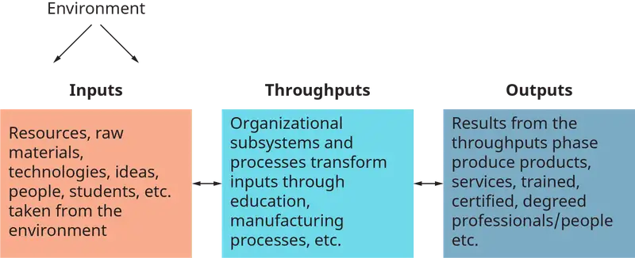
The open systems model serves as a feedback loop continually taking in resources from the environment, processing and transforming them into outputs that are returned to the environment. This model explains organizational survival that emphasizes long-term goals.
Organizations according to this theory are considered as either Open or Closed systems, (or relatively opened or closed) depending on the organization’s sensitivity to the environment. Closed systems are less sensitive to environmental resources and possibilities, and open systems are more responsive and adaptive to environmental changes. For example, during the 1980’s the then Big 3 U.S. auto manufacturers (Ford, General Motors and Chrysler) were pressured by Japanese auto manufacturers’ successful 4-cylinder car sales that hit the U.S. like a shock wave. The Detroit producers experienced slumping sales, plant closures, and employee lay-offs in response to the Japanese wave of competition. It seemed that the U.S. auto makers had become closed or at least insensitive to changing trends in cars during that time and were unwilling to change manufacturing processes. Similarly, Amazon’s business model, discussed earlier, has and continues to pressure retailers to innovate and change processes and practices to compete in this digital era.
Organizations respond to external environments not only through their structures, but also by the domains they choose and the internal dimensions and capabilities they select. An organization defines itself and its niche in an environment by the choice of its domain, i.e., what sector or field of the environment it will use its technology, products, and services to compete in and serve. Some of the major sectors of a task environment include marketing, technology, government, financial resources, and human resources.
Presently, several environmental domains that once were considered stable have become more complex and unstable—e.g., toys, public utilities, the U.S. Postal Service, and higher education. And even domains are changing. For example, as referred to earlier, the traditionally stable and somewhat unchanging domain of higher education has become more complex with the entry of for-profit educational institutions, MOOCs (massive open online courses), internal company “universities,” and other certification and degree programs outside traditional private institutions. Sharing-economy companies such as Uber and Airbnb have redefined the transportation domain in which taxis operate and the hospitality domain in which hotels and bed and breakfasts serve. New business models that use mobile phones, ICTs (information communication technologies), and apps remove middle management layers in traditional organizations and structures.
With a chosen domain in which to operate, owners and leaders must organize internal dimensions to compete in and serve their markets. For example, hierarchies of authority and chain of command are used by owners and top-level leaders to develop and implement strategic and enterprise decisions; managers are required to provide technologies, training, accounting, legal, and other infrastructure resources; and cultures still count to establish and maintain norms, relationships, legal and ethical practices, and the reputation of organizations.
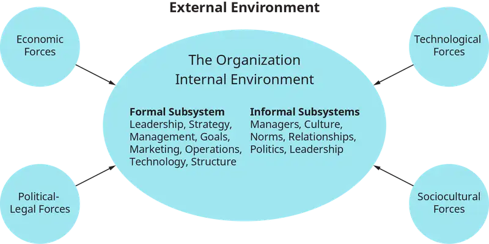
Figure 4.16 shows internal organizational dimensions. These dimensions and systems include leadership, strategy, culture, management, goals, marketing, operations, and structure. Relationships, norms, and politics are also included in the informal organization. There are other internal functions not listed here, such as research and development, accounting and finance, production, and human resources. Another popular depiction of internal organizational dimensions is the McKinsey 7-S model, shown in Figure 4.17. Similarly, strategy, structure, systems, skills, staff, and style all revolve around and are interconnected with shared values (or culture) in an organization.
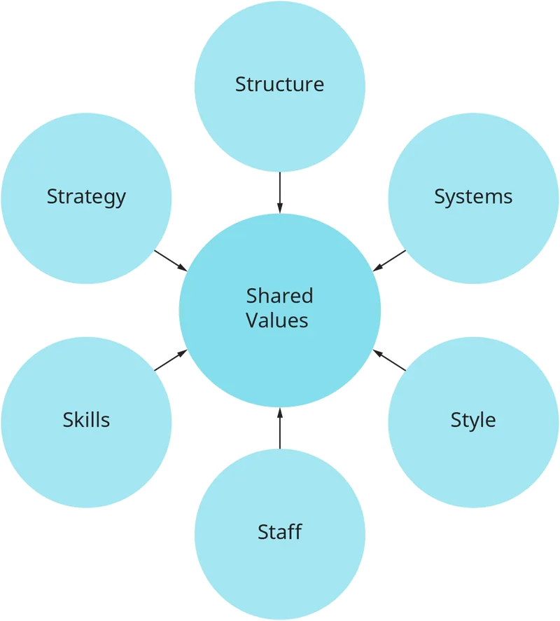
A unifying framework shown in Figure 4.18, developed by Arie Lewin and Carroll Stephens, illustrates the integration of internal organizational dimensions and how these work in practice to align with the external environment. Note that it is the CEO and other top-level leaders who scan the external environment to identify uncertainties and resources before using a SWOT analysis (identifying strengths, weaknesses, opportunities, and threats) to confirm and update the domain of an organization and then to define the vision, mission, goals, and strategies. Once the enterprise goals and strategies are developed, the organizational culture, structure, and other systems and policies can be established (human resources, technologies, accounting and finance, and so on).
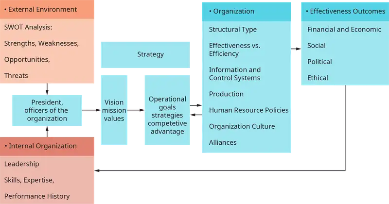
As Figure 4.18 shows, after a CEO and the top-level team identify opportunities and threats in the environment, they then determine the domain and purpose of the organization from which strategies, organizational capabilities, resources, and management systems must be mobilized to support the enterprise’s purpose. The company McDonald’s has, for example, successfully aligned its enterprise with the global environments it serves, which is “1% of the world’s population—more than 70 million customers—every day and in virtually every country across the world.” The major operating goal of the firm driving its internal alignment is a “fanatical attention to the design and management of scalable processes, routines, and a working culture by which simple, stand-alone, and standardized products are sold globally at a predictable, and therefore manageable, volume, quality, and cost.” A more detailed SWOT analysis of McDonald’s operations can be found in endnote.
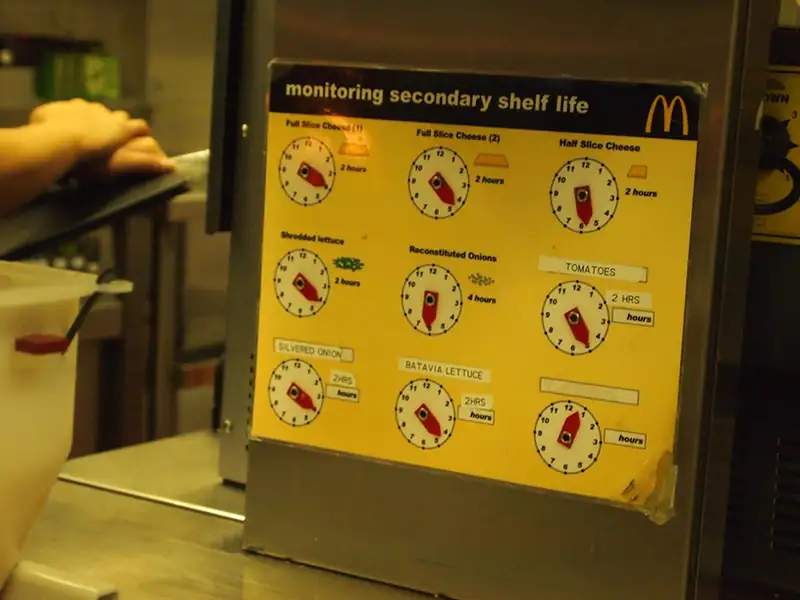
In practice, no internal organizational alignment with its external environment is perfect or permanent. Quite the opposite. Companies and organizations change leadership and strategies and make structural and systems changes to meet changing competition, market forces, and customers and end users’ needs and demands. Even Amazon continues to develop, expand, and change. With a mission statement as bold and broad as Amazon’s, change is a constant: “Our vision is to be earth’s most customer-centric company; to build a place where people can come to find and discover anything they might want to buy online” (Amazon.com, Apr 15, 2018).
Amazon has a functional organizational structure that focuses on business functions for determining the interactions among the different parts of the company. Amazon’s corporate structure is best characterized as global function-based groups (most significant feature), a global hierarchy, and geographic divisions, as Figure 4.20 shows. This structure seems to fit with the size of Amazon’s business—43% of 2016 retail sales were in the United States. Seven segments, including information technology, human resources and legal operations, and heads of segments, report to Amazon’s CEO. “Senior management team include two CEOs, three Senior Vice Presidents and one Worldwide Controller, who are responsible for various vital aspects of the business reporting directly to Amazon CEO Jeff Bezos.” The strategic goal underlying this structure is to facilitate Amazon.com to successfully implement e-commerce operations management throughout the entire organization.
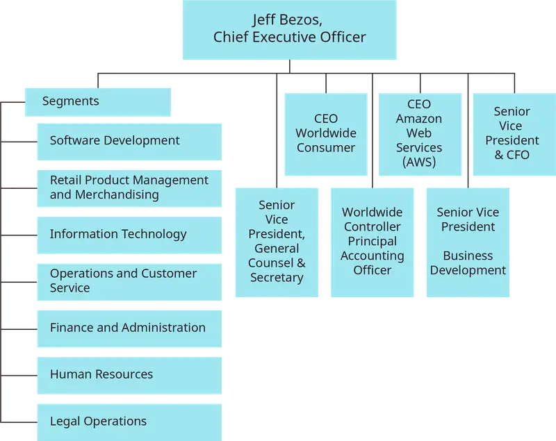
Despite the company’s exponential growth and success to date, as noted earlier in the section on organizational structures, a disadvantage of structures such as Amazon’s, and in this case Amazon’s, is that it has limited flexibility and responsiveness even with its current growth. “The dominance of the global function-based groups and global hierarchy characteristics reduces the capacity of Amazon to rapidly respond to new issues and problems encountered in the e-commerce business.” Still, Amazon’s most outstanding success factor remains its CEO, Jeff Bezos—his ingenuity, vision and foresight, and ability to sustain and even extend the company’s competitive advantages. Amazon customers value these factors—customer purchase criteria (CPC) that include price, fast delivery, and reliable service. “Consumers choose Amazon because it does better than its competition on these CPC.”
Concept Check
Identify the six major organizational structures.
Explain the McKinsey 7-S model.
4.5 Corporate Cultures¶
- Identify the fit between organizational cultures and the external environment
Organizational culture is considered one of the most important internal dimensions of an organization’s effectiveness criteria. Peter Drucker, an influential management guru, once stated, “Culture eats strategy for breakfast.” He meant that corporate culture is more influential than strategy in terms of motivating employees’ beliefs, behaviors, relationships, and ways they work since culture is based on values. Strategy and other internal dimensions of organization are also very important, but organizational culture serves two crucial purposes: first, culture helps an organization adapt to and integrate with its external environment by adopting the right values to respond to external threats and opportunities; and secondly, culture creates internal unity by bringing members together so they work more cohesively to achieve common goals. Culture is both the personality and glue that binds an organization. It is also important to note that organizational cultures are generally framed and influenced by the top-level leader or founder. This individual’s vision, values, and mission set the “tone at the top,” which influences both the ethics and legal foundations, modeling how other officers and employees work and behave. A framework used to study how an organization and its culture fit with the environment is offered in the Competing Values Framework.
The Competing Values Framework (CVF) is one of the most cited and tested models for diagnosing an organization’s cultural effectiveness and examining its fit with its environment. The CVF, shown in Figure 4.21, has been tested for over 30 years; the effectiveness criteria offered in the framework were discovered to have made a difference in identifying organizational cultures that fit with particular characteristics of external environments.
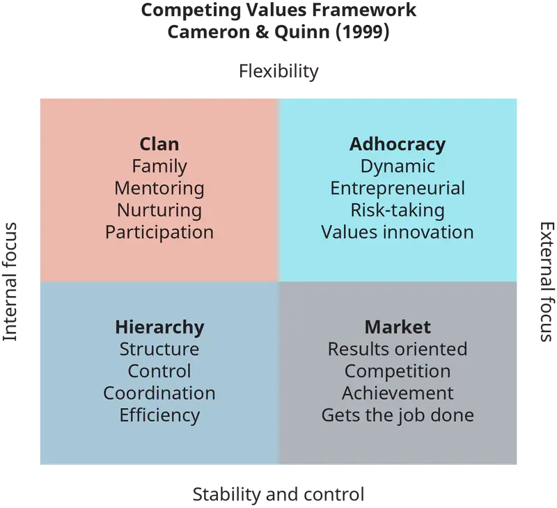
The two axes in the framework, external focus versus internal focus, indicate whether or not the organization’s culture is externally or internally oriented. The other two axes, flexibility versus stability and control, determine whether a culture functions better in a stable, controlled environment or a flexible, fast-paced environment. Combining the axes offers four cultural types: (1) the dynamic, entrepreneurial Adhocracy Culture—an external focus with a flexibility orientation; (2) the people-oriented, friendly Clan Culture—an internal focus with a flexibility orientation; (3) the process-oriented, structured Hierarchy Culture—an internal focus with a stability/control orientation; and (4) the results-oriented, competitive Market Culture—an external focus with a stability/control orientation.
The orientation of each of these cultural types is summarized as follows. The Adhocracy Culture profile of an organization emphasizes creating, innovating, visioning the future, managing change, risk-taking, rule-breaking, experimentation, entrepreneurship, and uncertainty. This profile culture is often found in such fast-paced industries as filming, consulting, space flight, and software development. Facebook and Google’s cultures also match these characteristics. It should be noted, however, that larger organizations may have different cultures for different groupings of professionals, even though the larger culture is still dominant. For example, a different subculture may evolve for hourly workers as compared to PhD research scientists in an organization.
The Clan Culture type focuses on relationships, team building, commitment, empowering human development, engagement, mentoring, and coaching. Organizations that focus on human development, human resources, team building, and mentoring would fit this profile. This type of culture fits Tom’s of Maine, which has strived to form respectful relationships with employees, customers, suppliers, and the physical environment.
The Hierarchy Culture emphasizes efficiency, process and cost control, organizational improvement, technical expertise, precision, problem solving, elimination of errors, logical, cautious and conservative, management and operational analysis, and careful decision-making. This profile would suit a company that is bureaucratic and structured, such as the U.S. Postal Service, the military, and other similar types of government agencies.
The Market Culture focuses on delivering value, competing, delivering shareholder value, goal achievement, driving and delivering results, speedy decisions, hard driving through barriers, directive, commanding, and getting things done. This profile suits a marketing-and-sales-oriented company that works on planning and forecasting but also getting products and services to market and sold. Oracle under the dominating, hard-charging executive chairman Larry Ellison characterized this cultural fit.
Amazon illustrates a company that can have a mix of cultures and be effective. For example, Amazon blends a high-performance Adhocracy Culture with regard to its external expansion and Bezos’s leadership style; at the same time, Amazon resembles a Hierarchy Culture internally with regard to its tight control over employees at lower levels. The company propelled its domain from an “online bookstore” “to selling everything online to being the pioneering in adopting cloud computing with AWS . . . to adopting the latest robotics in its warehouses to improve productivity . . . to thinking and testing disruptive technologies like drones and so on.” It has been criticized, at the same time, for its “toxic cut-throat work environment,” asserting that Jeff Bezos is overly demanding and sets very high standards for Amazon employees, as well as for himself. This type of culture extends down to the warehouse employees. Amazon employees have complained that “Work came first, life came second, and trying to find the balance came last.” This criticism peaked with an alleged suicide attempt in 2017 of a disgruntled employee who requested a transfer to a different department within in the company but was placed on an employee improvement plan—“a step that could result in his termination from Amazon if his performance didn’t improve.” Amazon has since changed many of its working rules and regulations for warehouse employees.
Concept Check
How can employee diversity give a company a competitive advantage?
Explain the concept of hiring for fit as it relates to corporate culture.
What are some organizational issues that must be addressed when two large firms merge or grow rapidly like Amazon?
4.6 Organizing for Change in the 21st Century¶
- Identify environmental trends, demands, and opportunities facing organizations.
The 2018 annual Global Risks Perception Survey (GRPS) predicts the following trends in the external environment: (1) persistent inequality and unfairness, (2) domestic and international political tensions, (3) environmental dangers, and (4) cyber vulnerabilities. With this context, authors in this report suggest that complex organizations approach their futures with the “nine resilience lens”—i.e., the capacity of a company or other organization to adapt and prosper in the face of high-impact, low-probability risks. The nine lenses are grouped into three categories. First, structural resilience considers the systemic dynamics within the organization itself. The author calls for “system modularity,” i.e., structures and designs that are “loosely coupled,” which is another way of saying that rigid, mechanistic hierarchies will not function as well in these high-impact environments. Secondly, integrative resilience underlines complex interconnections with the external context. Here the author suggests that organizations must be part of and aware of their contexts: geographically and the health of “individuals, families, neighborhoods, cities, provinces, and countries” that are affected. Relatedly, the author notes that organizations must rely on their social cohesion—such as the social capital an organization has to fall back on in times of crisis—which is a strong source of resilience. Third, transformative resilience requires that mitigating some risks requires transformation. Important to organizations here is the need “to proactively change or it will end up being changed by external circumstances.” This process requires organizational foresight, not forecasting. Organizations need to apply different search, environmental scanning, and new discovery techniques “to engage with the uncertainty of multiple futures.” They do this through innovation and experimentation. In practice, Google, Amazon, Facebook, SpaceX, Tesla, Airbnb, Uber, and the resilience of other industry and organizational pioneering will be required.
Another trend on the horizon is that “[o]rganizations are no longer judged only for their financial performance, or even the quality of their products or services. Rather, they are being evaluated on the basis of their impact on society at large—transforming them from business enterprises into social enterprises.” A recent survey showed that 65 percent of CEOs rated “inclusive growth” as a “top-three strategic concern, more than three times greater than the proportion citing ‘shareholder value.’” Deloitte researchers noted that “[a] social enterprise is an organization whose mission combines revenue growth and profit-making with the need to respect and support its environment and stakeholder network. This includes listening to, investing in, and actively managing the trends that are shaping today’s world. It is an organization that shoulders its responsibility to be a good citizen (both inside and outside the organization), serving as a role model for its peers and promoting a high degree of collaboration at every level of the organization.”
Chapter Review¶
Key Terms¶
- Adhocracy culture
- Creates an environment of innovating, visioning the future, accepting of managing change, and risk taking, rule-breaking, experimentation, entrepreneurship, and uncertainty.
- Clan culture
- Focuses on relationships, team building, commitment, empowering human development, engagement, mentoring, and coaching.
- Competing Values Framework
- Developed by Kim Cameron and Robert Quinn this model is used for diagnosing an organization’s cultural effectiveness and examining its fit with its environment.
- Complex-Stable environments
- Environments that have a large number of external elements, and elements are dissimilar and where elements remain the same or change slowly.
- Complex-Unstable environments
- Environments that have a large number of external elements, and elements are dissimilar and where elements change frequently and unpredictably
- Corporate culture
- Defines how motivating employees’ beliefs, behaviors, relationships, and ways they work creates a culture that is based on the values the organization believes in.
- Divisional structure
- An organizational structure characterized by functional departments grouped under a division head.
- Domain
- The purpose of the organization from which its strategies, organizational capabilities, resources, and management systems are mobilized to support the enterprise’s purpose.
- Functional structure
- The earliest and most used organizational designs.
- Geographic structure
- An Organizational option aimed at moving from a mechanistic to more organic design to serve customers faster and with relevant products and services; as such, this structure is organized by locations of customers that a company serves.
- Government and political environment forces
- The global economy and changing political actions increase uncertainty for businesses, while creating opportunities for some industries and instability in others.
- Hierarchy culture
- Emphasizes efficiency, process and cost control, organizational improvement, technical expertise, precision, problem solving, elimination of errors, logical, cautious and conservative, management and operational analysis, careful decision making.
- Horizontal organizational structures
- A “flatter” organizational structure often found in matrix organizations where individuals relish the breath and development that their team offers.
- Internal dimensions of organizations
- How an organization’s culture affects and influences its strategy.
- Market culture
- Focuses on delivering value, competing, delivering shareholder value, goal achievement, driving and delivering results, speedy decisions, hard driving through barriers, directive, commanding, competing and getting things done.
- Matrix structure
- An organizational structure close in approach to organic systems that attempt to respond to environmental uncertainty, complexity, and instability.
- McKinsey 7-S model
- A popular depiction of internal organizational dimensions.
- Mechanistic organizational structures
- Best suited for environments that range from stable and simple to low-moderate uncertainty and have a formal “pyramid’ structure.
- Natural disaster and human induced environmental problems
- Events such as high-impact hurricanes, extreme temperatures and the rise in CO2 emissions as well as ‘man-made’ environmental disasters such as water and food crises; biodiversity loss and ecosystem collapse; large-scale involuntary migration are a force that affects organizations.
- Networked-team structure
- A form of the horizontal organization.
- Organic organizational structures
- The opposite of a functional organizational form that works best in unstable, complex changing environments.
- Organizational structures
- A broad term that covers both mechanistic and organic organizational structures.
- Simple-Stable environments
- Environments that have a small number of external elements, and elements are similar, and the elements remain the same or change slowly.
- Simple-Unstable environments
- Environments that have a small number of external elements, and elements are similar and where elements change frequently and unpredictably.
- Socio-cultural environment forces
- Include different generations’ values, beliefs, attitudes and habits, customs and traditions, habits and lifestyles.
- Technological forces
- Environmental influence on organizations where speed, price, service, and quality of products and services are dimensions of organizations’ competitive advantage in this era.
- Virtual structure
- A recent organizational structure that has emerged in the 1990’s and early 2000’s as a response to requiring more flexibility, solution based tasks on demand, less geographical constraints, and accessibility to dispersed expertise.
Summary¶
4.1 The Organization's External Environment¶
- Define the external environment of organizations
Organizations must react and adapt to many forces in their internal and external environments. The context of the firms such as size and geographic location impact how environmental forces affect each organization differently. An understanding of the forces and they currently affecting organizations and pressuring structural change is crucial.
4.2 External Environments and Industries¶
- Identify contemporary external forces pressuring organizations
An understanding of the various industries and organizations ‘fit’ with different types of environment in crucial. There are small and large organizations that face environments that are either stable of unstable and managing the organization by recognizing their environment is a crucial skill.
4.3 Organizational Designs and Structures¶
- Identify different types of organizational structures, and their strengths and weaknesses
An understanding of Mechanistic vs Organic Structures and Systems and how they differ and how these major concepts help classify different organizational structures is crucial to recognizing organizational structures. Finally, the issue of organizational complexity and its impact on organizational structure needs to be understood.
You should be able to discuss the evolution of different types of Organizational Structures. You should understand and identify the six types of organizational structures, and the advantages and disadvantages of each: Functional, Divisional, Matrix, Geographic, Networked Team, and Virtual.
4.4 The Internal Organization and External Environments¶
- Explain how organizations organize to meet external market threats and opportunities
You should understand and identify the six types of organizational structures, and the advantages and disadvantages of each structure:
- Functional
- Divisional
- Matrix
- Geographic
- Networked Team
- Virtual
You should also understand why the internal dimensions of an organization matter with regard to how it fits with its external environment.
4.5 Corporate Cultures¶
- Identify the fit between organizational cultures and the external environment
You should be able to identify and differentiate between the four types of organizational cultures and the fit of each with the external environment and describe the CVF framework. Finally, you can identify the internal dimensions of organizations, the interconnection among the dimensions, and how these affect the ‘fit’ with external environments.
4.6 Organizing for Change in the 21st Century¶
- Identify environmental trends, demands, and opportunities facing organizations.
Among the trends in the external environment: (1) persistent inequality and unfairness, (2) domestic and international political tensions, (3) environmental dangers, and (4) cyber vulnerabilities. Another trend is that organizations will no longer solely be judged only for their financial performance, or even the quality of their products or services. Rather, they will be evaluated on the basis of their impact on society at large—transforming them from business enterprises into social enterprises.
Chapter Review Questions¶
- Explain how several current environmental forces are affecting and will affect organizations and organizational structures’ effectiveness and efficiency in the near future?
- What are ways to classify and describe how industries and organizations fit and do not fit with their external environments?
- What are a few industries and/or organizations that are fitting well with their current environments? What are a few that are not? Why?
- What are some major differences between organic and mechanistic organizational structures and systems?
- Which organization would you work best in, an organically or mechanistically structured one, and why?
- What are some advantages and disadvantages of functional structures?
- Do you think it’s true that every organization has a hidden functional structure in it? Explain your answer.
- Why have functional structures been criticized for not accommodating new changes in the environment?
- What are some advantages and disadvantages of divisional structures?
- How is a product structure one type of a divisional structure? Explain.
- What are some disadvantages in working in a matrix structure and why?
- What advantages do matrix structures have compared to functional structures?
- What advantages do geographic structures have compared to a functional structure?
- What are issues that working in a networked team structure present?
- In what ways is a virtual organization and structure different from the other ones discussed in the chapter?
- What major trends discussed at the end of this chapter are different from previous external environments and the ways organizations were organized?
- What purposes does an organization’s culture serve when considering the external environment?
- How does Figure 4.16 facilitate an understanding of how the internal organization functions with external environments?
Management Skills Application Exercises¶
- You have just been assigned to lead a functionally structured organization. Explain what types of skills you would need to best perform this function.
- What types of problems would you expect to have managing a divisionally structured organization? What skills would you need to excel in this undertaking?
- If you were assigned to work in a matrix team structure, explain the issues and benefits you might expect to experience and why. What skills would help you in this function?
- .You have just been assigned to work with a strategy team in an organization to predict issues and opportunities that might be expected for the next 2 years. Using this chapter, explain what information you would provide to this team?
- Use Figure 4.21, “The Competing Values Framework,” to identify the type of organizational culture at IKEA, Home Depot, and Best Buy.
Managerial Decision Exercises¶
- You are a manager working in a functionally structured organization. A disgruntled employee is complaining about problems she is having in that structure. Outline a way you would find out more about her complaints with regard to her being in this type of structure and some ways to assist her.
- You are a manager working in a networked team structured organization. A disgruntled employee is complaining about problems he is having in that structure. Outline a way you would find out more about his complaints with regard to his being in this type of structure and some ways to assist him.
- You have been selected to lead a team to decide on a different type of structure in your organization to better serve customers who are complaining about poor service that is slow, impersonal, and not meeting their needs to be heard. Presently, the functional structure isn’t working well. Outline some information from your knowledge using this chapter that would help the team in its assignment.
- You witness a senior executive at your firm engaging in overly aggressive methods of pressuring employees to increase their sales quotas beyond reasonable means. You are in a networked team structure that is partly a matrix. You are uncertain about whom to discuss this issue with. What would you do?
- As a new graduate, you have been hired to help a medium-sized company come into the 21st century. Products need revamping, people aren’t sharing information, and customers are gradually leaving. The firm has a traditional top-down managed, vertical hierarchy. It is believed that the firm has very good potential to sell its products, but new markets may be needed. Outline an agenda you would work on to research and make suggestions with regard to this chapter’s focus and content.
Critical Thinking Case¶
Wells Fargo, Crisis and Scandal¶
The recent widespread scandal at Wells Fargo jolted and shocked the corporate world. How could such internal corrupt and outrageously illegal and unethical activities by professionals have occurred? Wells Fargo is “an American multinational financial services company headquartered in San Francisco, California” with offices nationwide and “the world’s second-largest bank by market capitalization and the third largest bank in the U.S. by total assets.” In September 2016 it was discovered that the company was continuing to create fake customer accounts to show positive financial activity and gains. 5,000 salespeople had created 2 million fake customer accounts to meet high-pressure internal sales goals, including a monthly report called the “Motivator.”
The out-of-control sales leadership pressured sales employees to meet unrealistic, outrageous sales targets. Dramatically unrealistic sales goals propelled by continuous pressure from management coerced employees to open accounts for customers who didn't want or need them. “Some Wells Fargo bankers impersonated their customers and used false email addresses like noname@wellsfargo.com, according to a 2015 lawsuit filed by the city of Los Angeles.”
The “abusive sales practices claimed in a lawsuit that Wells Fargo employees probably created 3.5 million bogus accounts” starting in May 2002. Wells Fargo is awaiting final approval to settle that case for $142 million. However, regulators and investigations found that the misconduct was far more “pervasive and persistent” than had been realized. “The bank’s culture of misconduct extended well beyond the original revelations.” For example, regulators found that the company was (1) “overcharging small businesses for credit card transactions by using a ‘deceptive’ 63-page contract to confuse them.” (2) The company also charged at least 570,000 customers for auto insurance they did not need. (3)The firm admitted that it found 20,000 customers who could have defaulted on their car loans from these bogus actions; (4) The company also had created over 3.5 million fake accounts attributed to customers who had no knowledge of such accounts.
Wells Fargo has had to testify before Congress over these charges, which have amounted to $185 million dollars, and more recently the company has been ordered by regulators to return $3.4 million to brokerage customers who were defrauded. The CEO and management team have been fired and had millions of dollars withheld from their pay.
In the aftermath of the scandal, even though Wells Fargo executives were not imprisoned for the extensive consumer abuses committed by the company, the CFPB (Consumer Financial Protection Bureau) and Office of the Comptroller of the Currency (OCC) imposed a $1 billion fine on Wells Fargo for consumer-related abuses regarding auto loan and mortgage products. The OCC also forced the company to allow regulators the authority to enforce several actions to prevent future abuses, such as and including “imposing business restrictions and making changes to executive officers or members of the bank’s board of directors.” The new president of the company, Tim Sloan, stated, “What we’re trying to do, as we make change in the company and make improvements, is not just fix a problem, but build a better bank, transform the bank for the future.”
Critical Thinking Questions
- What happened at Wells Fargo with regard to past activities that led to this major scandal?
- What internal dimensions of the company were part of the problems that occurred?
- How might the organizational structure of the company have been part of the problems that occurred?
- . Identify and use relevant concepts from this chapter as well as your own thoughts and analysis to diagnose the scandal at Wells Fargo. How could such a scandal have occurred in the first place? Who and what was at fault?
- Suggest some solution paths the company might consider, using knowledge from this chapter and your own thoughts/research, to avoid such a scandal from reoccurring.
Sources: https://en.wikipedia.org/wiki/Wells_Fargo; Pasick, Adam, “Warren Buffett Explains the Wells Fargo Scandal,” Quartz, May 6, 2017. https://qz.com/977778/warren-buffett-explains-the-wells-fargo-scandal/https://qz.com/977778/warren-buffett-explains-the-wells-fargo-scandal/; Bloomberg, “The Wells Fargo Fake Accounts Scandal Just Got a Lot Worse,” Fortune, August 21, 2017. http://fortune.com/2017/08/31/wells-fargo-increases-fake-account-estimate/; Horowitz, Julia, “‘huge, huge, huge error’ in Wells Fargo Handling of Ethics Line Calls, CNN, May, 6, 2017. https://money.cnn.com/2017/05/06/investing/buffett-wells-fargo-berkshire-annual-meeting/index.html; http://money.cnn.com/2018/02/05/news/companies/wells-fargo-timeline/index.html; Wattles, Jackie, Grier, Ben, and Egan, Matt, “Wells Fargo’s 17 Month Nightmare,” CNN Business, February 5, 2018. https://money.cnn.com/2018/02/05/news/companies/wells-fargo-timeline/index.html. Hudson, Caroline, “Wells Fargo Stocks Still Struggling in Wake of Scandal,” Charlotte Business Journal, April 2, 2018. https://www.bizjournals.com/charlotte/news/2018/04/02/wells-fargo-stocks-still-struggling-in-wake-of.html
Adapted from Principles of Management by OpenStax, licensed under CC BY 4.0. Access the original for free at openstax.org. Changes: converted to the web reading format of The Open Book Project.